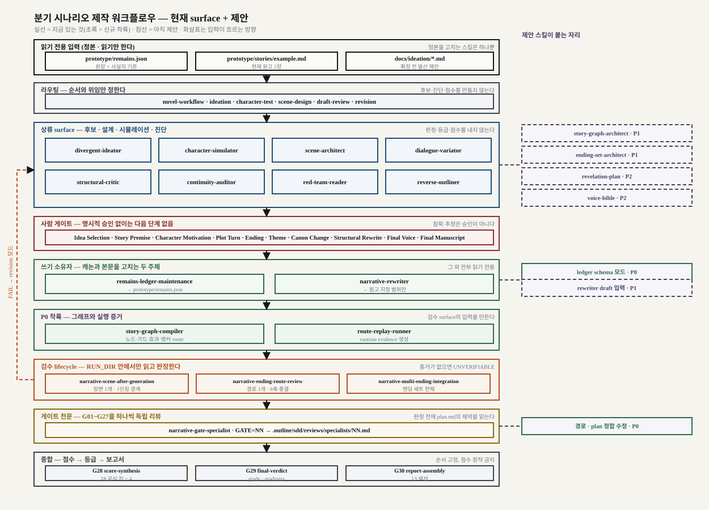

revision 모드로 되돌아가는 경로다.읽는 법 — 층이 나뉘어 있는 이유
| 층 | 왜 이 층이 따로 있는가 | 넣는 것 → 내보내는 것 |
|---|---|---|
| 읽기 전용 입력 | 스킬이 사실을 발명하지 못하게 하려고. 모든 판정은 원장·원고로 되돌아갈 수 있어야 한다. 그래서 입력은 스냅샷으로 복사되고 SHA-256이 붙는다. | 원장 · 원고 · 발산 제안 → RUN_DIR/inputs/ 스냅샷 |
| 라우팅 | 스킬이 늘어나면 "무엇을 먼저"가 사고 지점이 된다. 특히 한 요청이 두 단계를 요구할 때(그때는 뒤 단계를 모드로 삼는다). | 요청 문장 → 모드 · 단계 표 · 사람 게이트 · 위임 대상 |
| 상류 surface | 만드는 자와 채점하는 자를 나눈다. 자기 채점을 막으려고 상류는 후보·진단·설계에서 멈추고 점수·등급을 내지 않는다. | 정본 + 요청 → 후보 · scene card · 진단 · 반응 후보 |
| 사람 게이트 | 엔딩·주제·캐릭터 동기 같은 창작 결정은 도구가 대신할 수 없다. 그래서 상류와 쓰기 사이에 있다 — 승인 전에는 캐논에 닿지 않는다. | 후보·제안 → 사람의 명시적 선택 문장 |
| 쓰기 소유자 | 정본을 고치는 주체가 둘이면 정본이 사라진다. 캐논과 본문에 각각 하나씩만 둔다. | 승인된 변경 → remains.json / 원고 지정 범위 |
| 그래프·증거 (P0 착륙) | 검수 surface가 요구하는 route manifest·anchor·compiled-content SHA-256·runtime evidence를 만드는 칸. 2026-09-13 전까지 비어 있었다. |
승인 산출물 → story-graph.json · routes · replay evidence |
| 검수 lifecycle | 만든 사람이 자기 것을 채점하지 않는다. 검수는 RUN_DIR 안의 스냅샷만 읽어 입력을 통제하고, 증거가 없으면 UNVERIFIABLE로 남긴다 — 추측으로 채우지 않는다. |
장면 · 경로 · 엔딩 세트 → PASS|FAIL|UNVERIFIABLE + finding |
| 게이트 전문 | 게이트 하나를 독립 리뷰해 판정이 옆 게이트로 번지지 않게 한다. 담당 밖 게이트를 채점하지 않고, 최종 등급도 내지 않는다. | 게이트 범위 + 지문 → 메모 1개(GATE=NN) |
| 종합 | 메모 27개를 하나의 점수·등급·보고서로 고정하지 않으면 매번 다른 키가 생긴다. 순서를 G28→G29→G30으로 못박는다. | 메모 27개 → 18 공식 키 + 4 supplemental → verdict 5개 → 13섹션 보고서 |
제안 스킬이 앉는 자리
| 제안 | 플로우 위치 | 그 자리가 비었을 때 막히던 것 |
|---|---|---|
story-graph-compiler P0 착륙(2026-09-13) | 상류와 검수 사이의 그래프 칸 | 검수 입력(manifest·anchor·지문)이 없어 경로·엔딩 검사를 시작할 수 없다. 해소(2026-09-13). |
route-replay-runner P0 착륙(2026-09-13) | 그래프 칸, 컴파일러 다음 | mechanics·도달성·배타성 검사가 전부 UNVERIFIABLE로 남는다. 해소(2026-09-13). |
remains-ledger-maintenance + schema P0 착륙(2026-09-13) | 쓰기 칸 | 엔딩·경로·플래그가 캐논이 되지 못해 검수 대상이 정본 밖에 떠 있는다. 해소(2026-09-13, schema 모드). |
| 게이트 specialist 경로·plan 정합 P0 착륙(2026-09-13) | 게이트 전문 칸 | 판정의 전제(Global Constraints, 출력 주소)가 없어 리뷰어가 제약을 추론한다. 해소(2026-09-13, 추론 금지로; 주소는 유지). |
story-graph-architect P1 | 상류 칸 | 수렴점과 분기 예산을 정하는 주체가 없어 G05가 사후에만 문제를 본다. |
ending-set-architect P1 | 상류 칸 | MULTI_ENDING 검수의 입력(엔딩 세트·배타 상태·앵커)이 없다. |
narrative-rewriter + draft P1 | 쓰기 칸 | scene card를 초고로 옮기는 주체가 없어 사양만 쌓인다. |
revelation-plan P2 | 상류 칸 | G09·G19가 계획 없이 사후 진단만 한다. |
voice-bible P2 | 상류 → 쓰기 | 4인 말투 정본이 없어 대사 변주가 [HYPOTHESIS]로만 남는다. |
순서를 지키는 이유
그래프 칸을 먼저 채우지 않으면 검수 칸은 영원히 UNVERIFIABLE이고, 캐논 칸을 먼저 열지 않으면 그래프가 정본 밖에서 논다. P0 넷은 한 덩어리로 착륙했다(2026-09-13). 남은 것은 P1 셋(설계 주체와 초고 작성)과 P2 둘이다.
이 그림에서 읽어야 할 세 가지
- 화살표는 한 방향으로만 흐른다. 검수가 상류를 고치지 않는다. FAIL이 나오면
revision모드로 되돌아가 사람이 고친다 — 왼쪽 루프가 그 경로다. - 점선이 전부 오른쪽에 있다. 지금 surface는 상류·쓰기·검수·종합이 갖춰져 있고, 빠진 것은 검수에 먹일 입력을 만드는 층 하나다.
- 사람 게이트가 병목이 아니라 잠금장치다. 후보와 진단은 자유롭게 흐르고, 캐논에 닿는 순간에만 잠긴다.